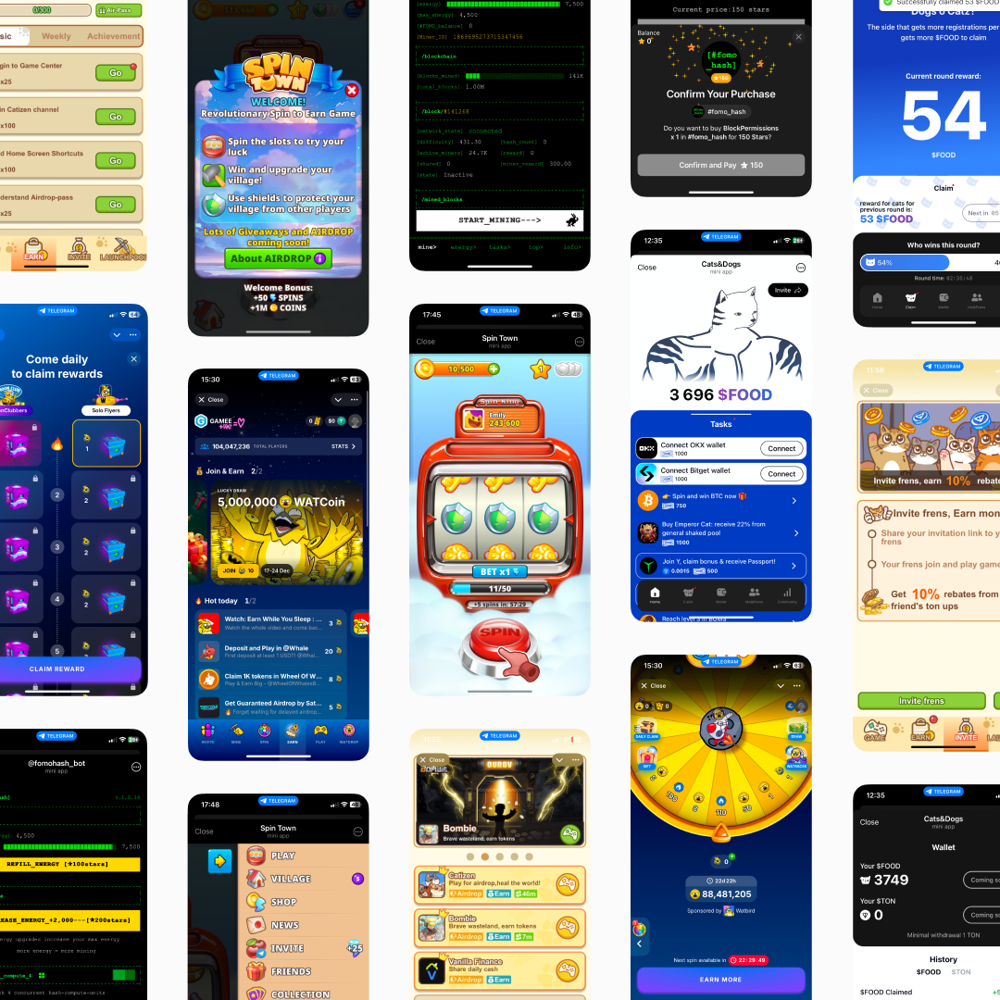
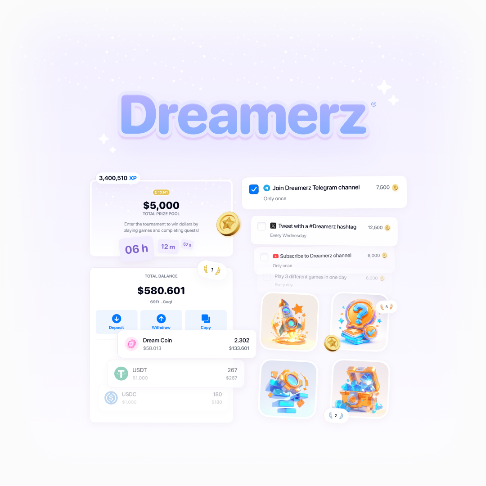
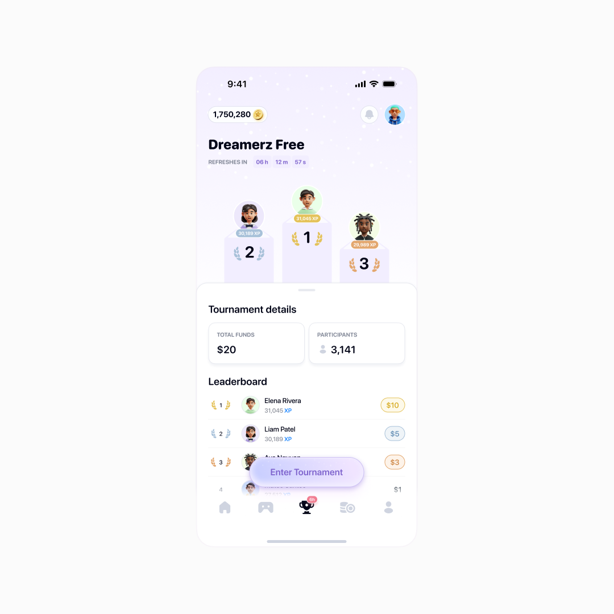
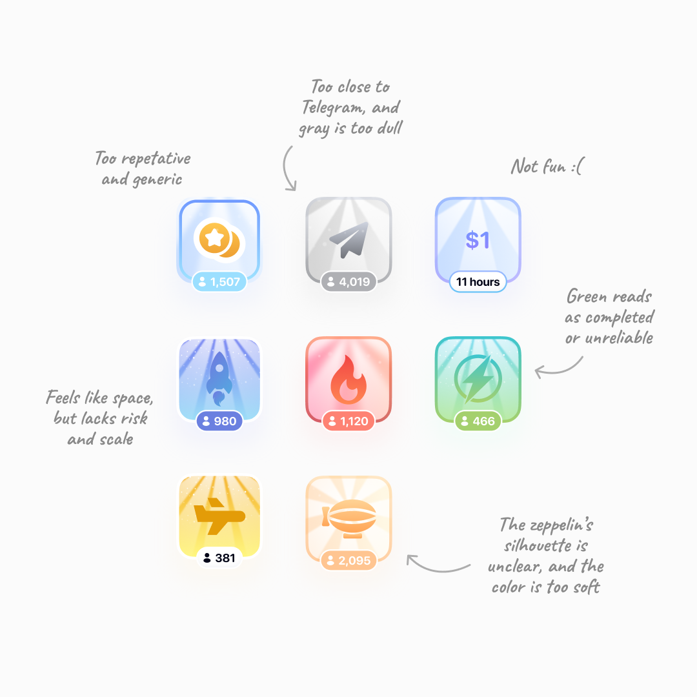
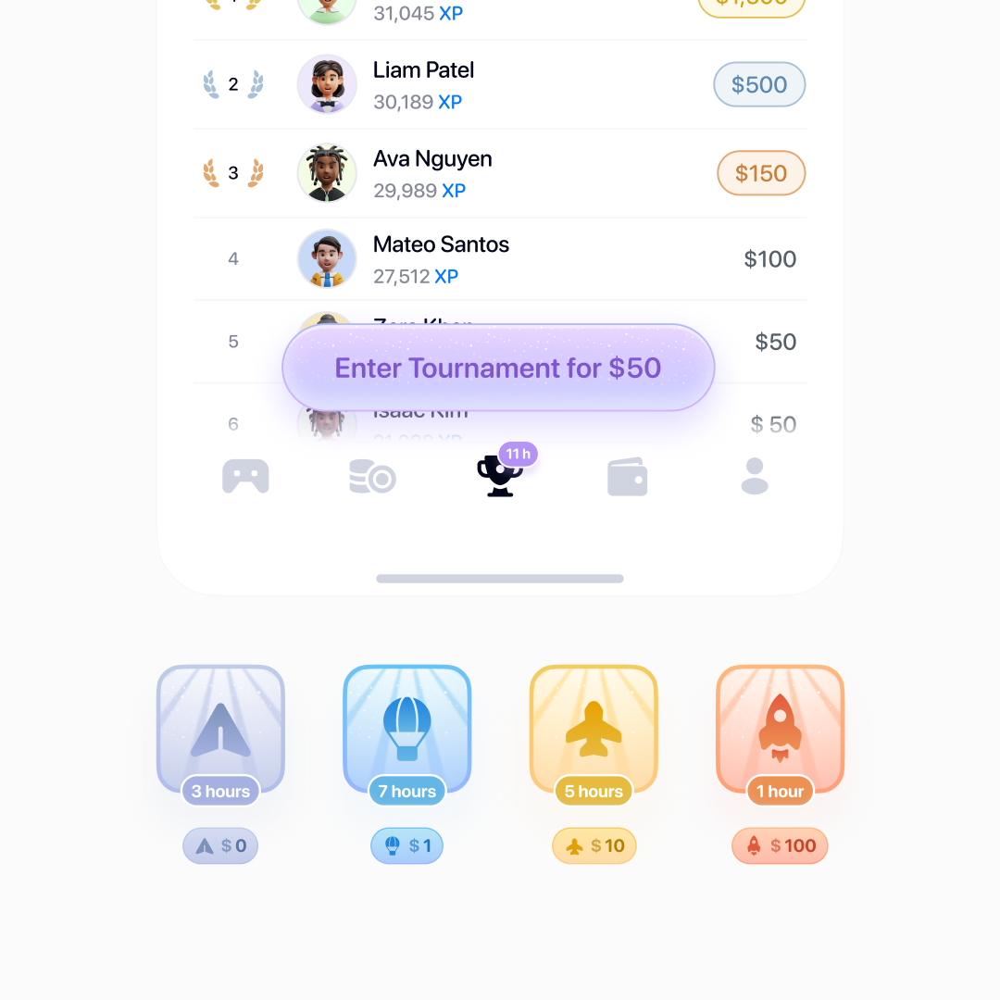
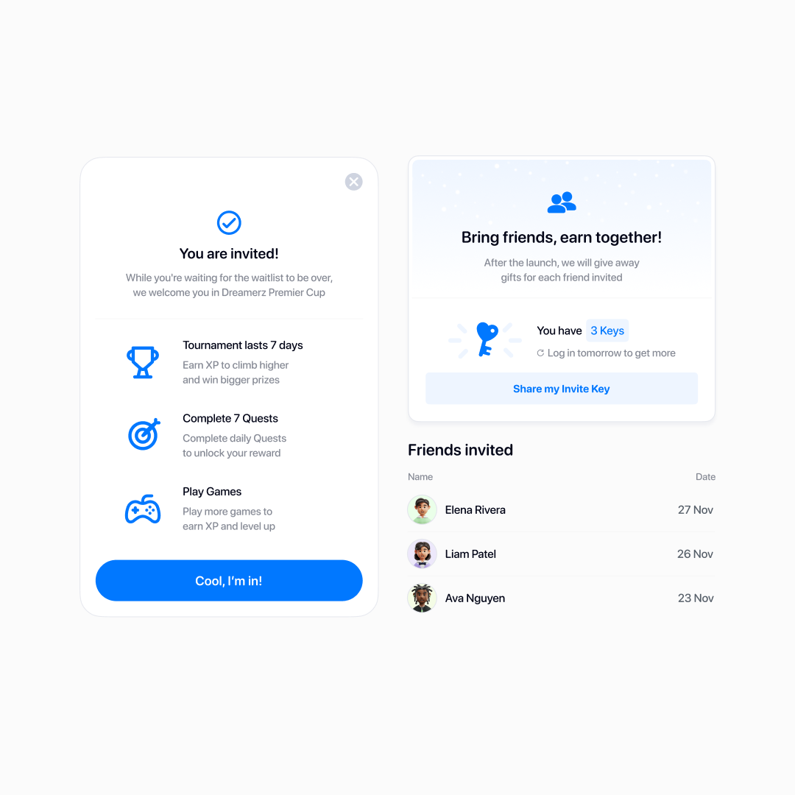
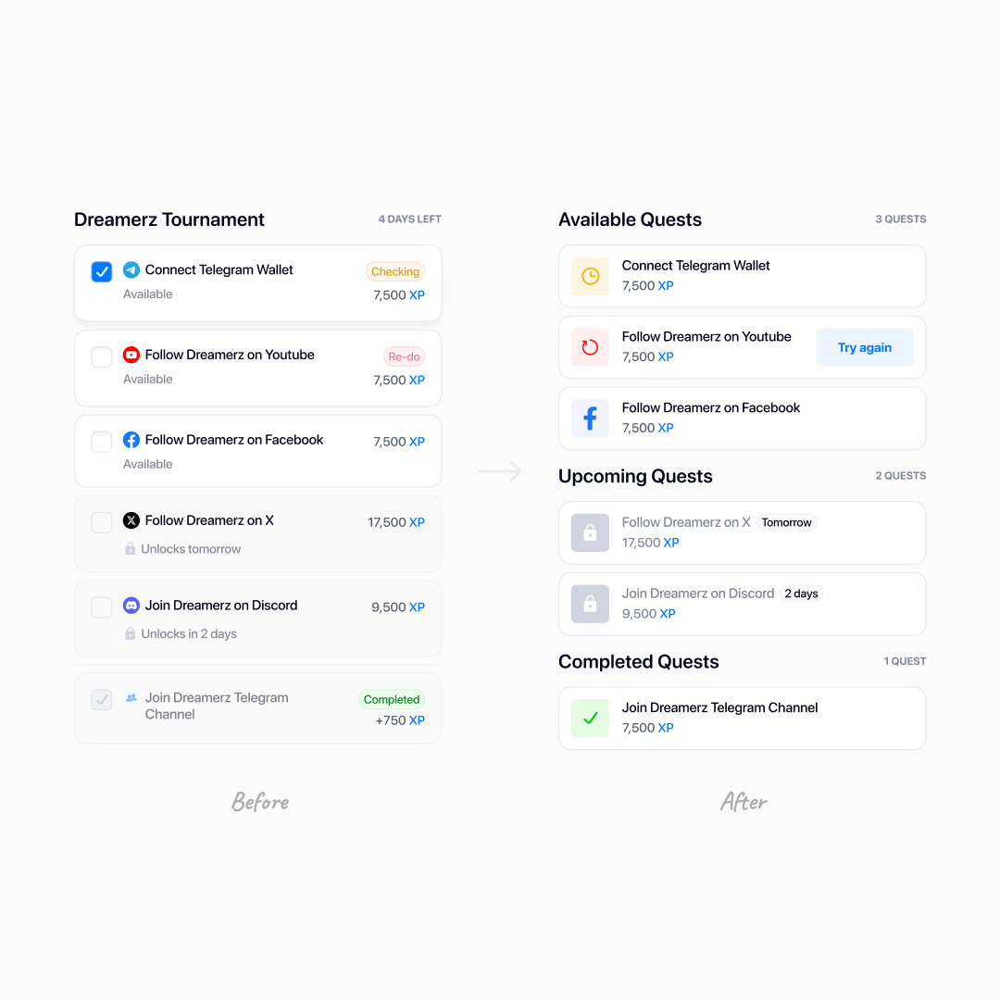
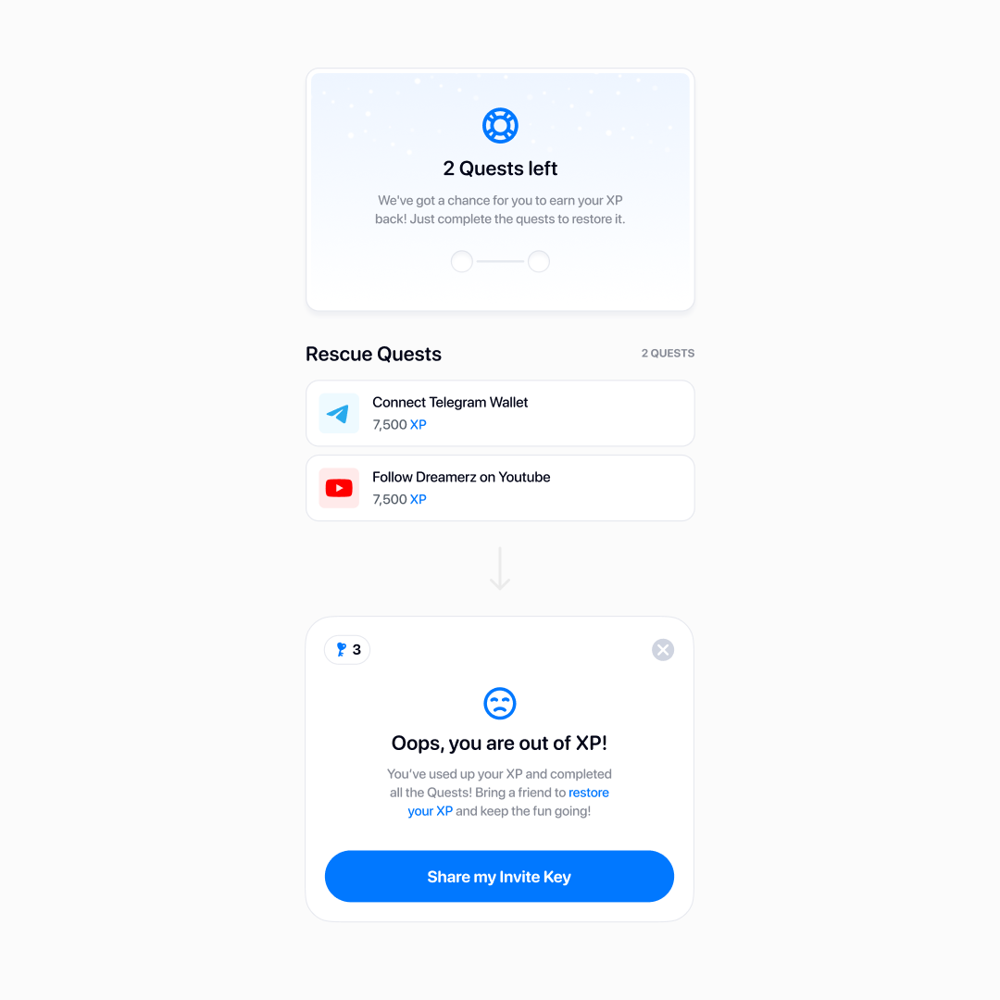
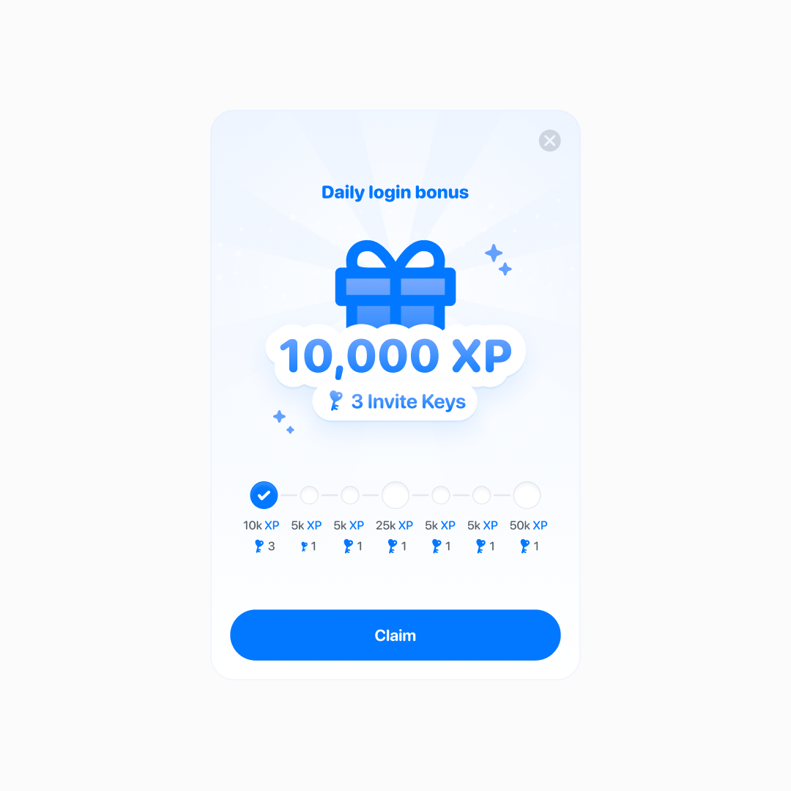
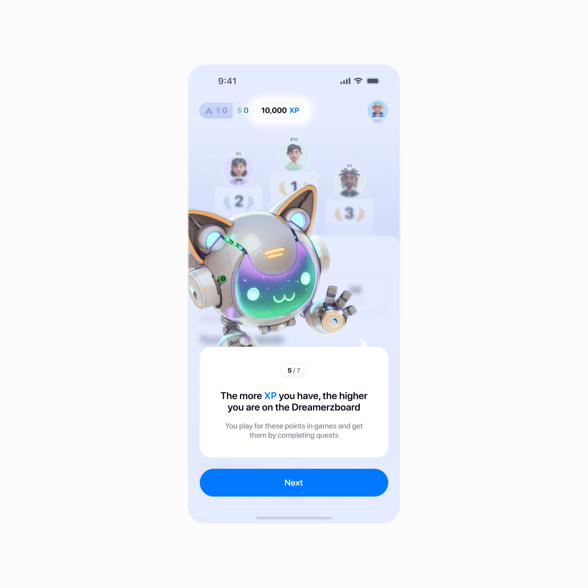

Dreamerz — from launch to 27K+ monthly players
An approachable social gaming platform with competitive mini-games, quests, and the chance to earn real rewards.
The challenge was to make competition engaging and its rules and rewards understandable for a broad audience.
I owned the player-facing experience from launch, except the games themselves — helping the team reach 70%+ day-one activation and 27,000+ monthly players.
Win them with the brand, keep them with the mechanics
We started with Telegram as the entry point, largely because its wallet took seconds to set up. But the space we were entering looked like this:

You know the vibe: loud, intense, and full of in-jokes
Early interviews revealed practical doubts: who pays the prizes, what do I need to do, and can I actually withdraw a win?
So I shaped the brand to feel light, calm, and approachable — with a friendly explanatory tone, soft visuals, and dreaminess over pushiness.

We showed entry costs and prize conditions before participation. In tests, I asked people to explain what they could win and lose in their own words.
The team focused on games where skill meaningfully shaped the outcome — think a quiz.
For users who played for real rewards, their value had to feel tangible and stable — so I pushed for stablecoins, essentially dollar-pegged tokens, over volatile coins.
Enter tournaments
If competition drives excitement, why not make the leaderboard the heart of the platform?
Watching Hotjar recordings, I noticed users playing outside tournaments, then drifting away. In interviews, they described enjoying the games but having little reason to return.
I proposed turning casual play into a free tournament, with automatic entry after onboarding. Same games, but now players had opponents, a place in the table, and a result to improve.

Main hub for newcomers
In an A/B test with 2,400 new users, D7 retention rose from 18% to 22%, a four-percentage-point increase. The test covered the new mode as a whole. Paid participation didn't drop.
Separately, we dropped from two currencies to one. XP stayed for a reason: “coins” kept making people think they could withdraw.
Which tournament am I even in?
The MVP had one tournament. As we added paid and advertiser-run tournaments, a player could lose track: which one am I in? How much is on the line?
I tried different icons and combinations of colors. In tests, I asked people to identify their tournament across screens and find another one.

Even the softness of an icon’s light rays changed how inviting it felt
A strong metaphor emerged: flying machines, from a paper plane up to a space rocket. Exclusive tournaments got emoji instead — easy for advertisers to sign off on, and quick for us to drop in.

That's how I landed on a visual coding system: each tournament carried its own color and icon across the interface. Entry costs and prizes stayed explicit alongside them.
The more exclusive the tournament, the bolder its branding
That identity carries through to the win screen, too.
A popup celebrates the win and guides players onward
We saw hundreds of users start for free, then enter paid tournaments using what they'd earned in-game.
Scaling up
With people returning and trying more tournaments, we relaunched invite-only and kicked off a big ad campaign.
I reimagined the existing invite-a-friend feature as shareable keys. We saw users posting their invite codes on X.

Invite keys outlived the campaign and helped players feel like insiders
I'd been the only product designer until now, working directly with the founders. As the product grew, we built out a full product team.
Iterating on a live product
By winter we had nearly 20,000 monthly players. We shifted from pure growth to refining the live product.
Quests showed where that work was needed. The founders suggested motivational banners, but people were already opening quests and getting stuck afterward. A failed check said “redo” without a clear way to retry. In tests, people assumed it was broken.
I redesigned the statuses, error explanations, and retry flow, and worked with developers on false rejections.

Icons and statuses unified, and the expected actions became clearer
In an A/B test with 4,000 users, completion rose from 40% to 48% — eight percentage points, or 20% relative growth. We measured at least one completed quest within 24 hours of first opening the section. Tasks and rewards stayed the same.
When a player ran out of XP, we gave them a two-step path back in: first through rescue quests, then, if those ran out too, by inviting friends. Rewards were capped so games remained the main way to compete.

Players often asked for a way to earn back lost XP
Later, I added a daily login bonus to make returning useful in the active tournament. We'd started with the core loop so we could understand and manage it before adding more mechanics.

Longer streaks, bigger rewards — and a bigger edge in the active tournament
Outcome
After the public launch, 70%+ of new sign-ups completed onboarding and played at least one tournament game within 24 hours — our day-one activation measure.
In a couple of months, Dreamerz reached 27,000+ monthly players — unique users who played in the previous 30 days.
That's the whole team — design, engineering, QA, marketing, and support — pulling together. And our charming mascot, too.

Auto-entry made onboarding dramatically smoother
Why it ended — and what I keep
Dreamerz was live for just under a year. The company couldn't close an investment deal and eventually wound down — settling up with every winner and advertiser.
Looking back, I'd connect the first game, return visits, and paid participation in one funnel earlier, to see how individual improvements added up to lasting use.
Much of what made Dreamerz work sat outside design itself: research, planning, negotiation, and constant prioritization. That's what I'm taking with me.